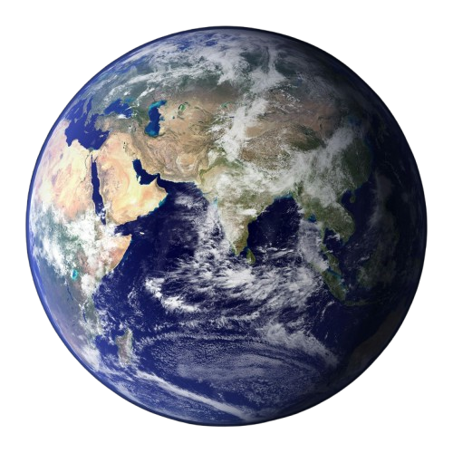
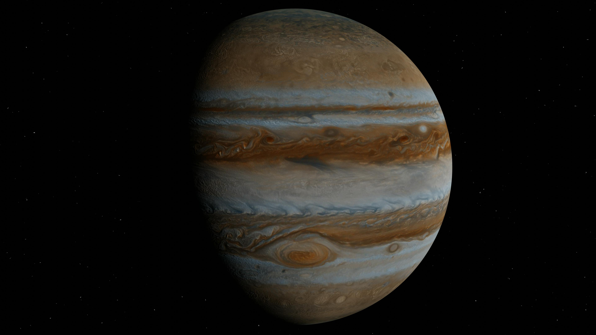

الشمس
الشمس هي النجم المركزي للنظام الشمسي وهي المصدر الرئيسي للطاقة.

الأرض
كوكب الأرض هو الكوكب الثالث من الشمس وهو الكوكب الوحيد المعروف الذي يحتوي على حياة.

المشتري
المشتري هو أكبر كوكب في النظام الشمسي ويتألف بشكل أساسي من الغاز.
